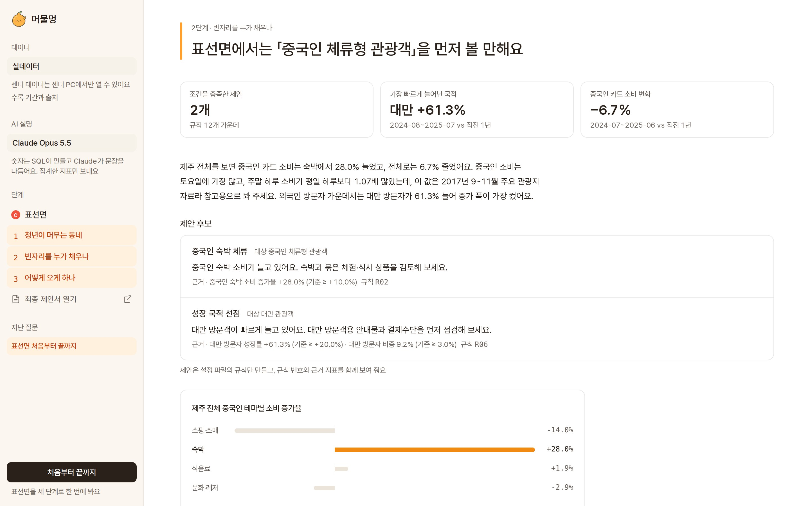
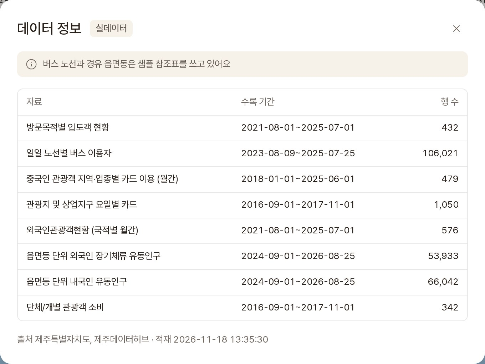
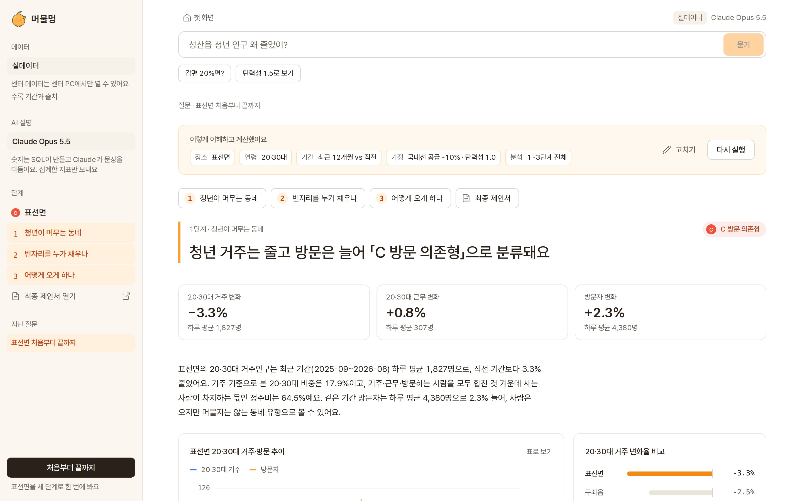
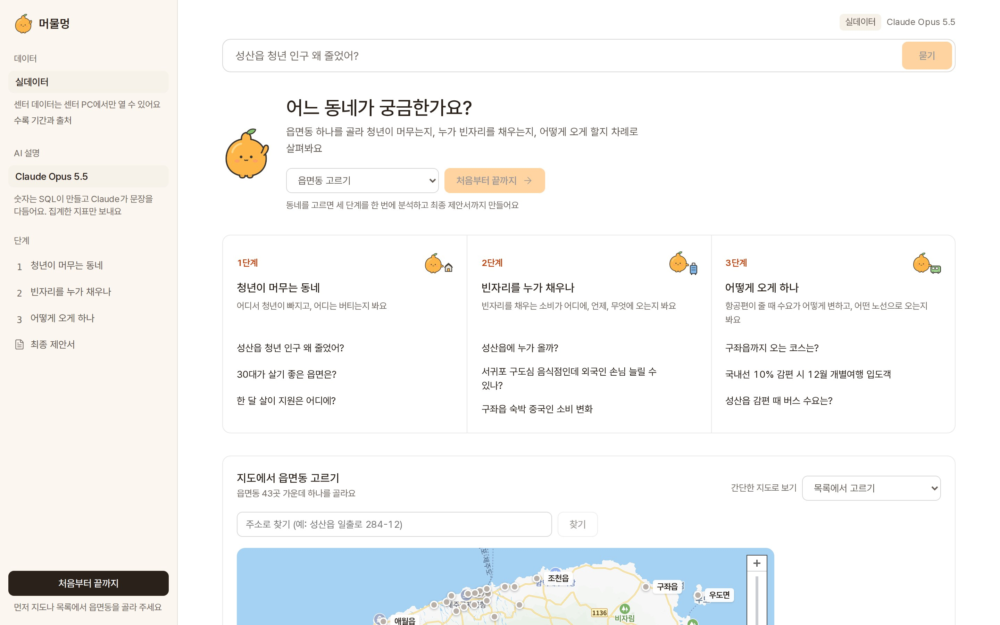
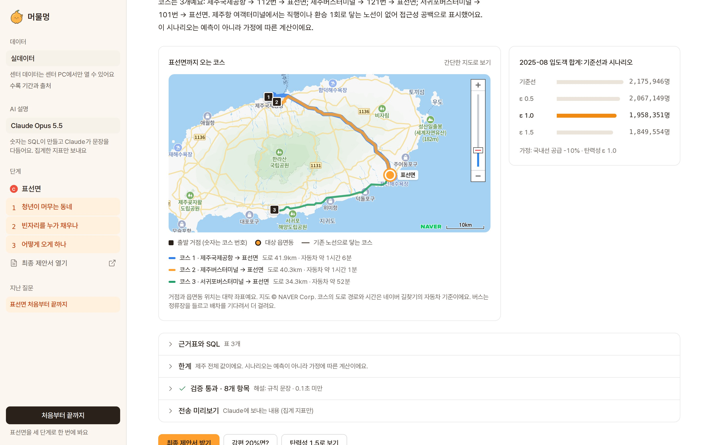

2026 제주 AI 빅데이터 에이전트 챌린지 · AI Agent 기획서

혼저 옵서예!
머물멍
사람이 떠나는 동네에 누가 오고, 어떻게 오게 할 것인가
제주 43개 읍면동의 청년 정착을 진단하고, 동네 유형에 맞는 관광객과 그들이 오는 길까지
제안하는 읍면동 활력 3단계 AI 에이전트
제안하는 읍면동 활력 3단계 AI 에이전트
머물멍 · AI Agent 기획서1 / 15
머물멍은 읍면동 하나를 두고 세 질문에 차례로 답한다. 청년이 머무는가, 빈자리를 누가 채우는가, 그 사람을 어떻게 데려올 것인가. 앞 단계의 결과가 다음 단계의 질문이 되어, 사용자는 동네 하나만 고르면 최종 제안서까지 받는다.

출처: 인구 순유출 — 통계청 국내인구이동통계(뉴스1 보도), 관광객·공급석 — 제주도 민생경제상황실(뉴스서울, 2026.8.21).
제주는 세 가지 변화를 동시에 겪고 있다. 2023년 14년 만에 인구가 순유출로 돌아섰고, 2026년 상반기 내국인 관광객은 6.4% 줄었지만 외국인 관광객은 31.9% 늘었다. 같은 기간 국내선 공급석은 37만 석 줄었다. 세 변화는 지금까지 인구·관광·교통 분야에서 각각 분석되어 왔으나, 실제로는 같은 동네 안에서 서로 맞물려 있다.
| 변화 | 정책 질문 | 담당 단계 |
|---|---|---|
| 청년이 떠난다 | 어느 동네에서 청년이 빠지고 어디는 버티는가. 청년 정착 지원은 어디에 효과가 있을까 | Stage 1 「청년이 머무는 동네」 |
| 관광객이 바뀐다 | 빈자리를 채우는 외국인 소비는 어느 업종·요일·국적에서 오는가 | Stage 2 「빈자리를 누가 채우나」 |
| 접근이 줄었다 | 감편 조건에서 수요는 어떻게 변하고, 어떤 노선·코스로 동네까지 데려올 수 있는가 | Stage 3 「어떻게 오게 하나」 |
제주 43개 읍면동별로 "청년이 머무는가 → 빈자리를 누가 채우는가 → 그 사람을 어떻게 데려올 것인가"를 데이터로 진단하고 처방한다.
세 질문은 하나의 에이전트 안에서 같은 조인 키(읍면동 · 연월 · 요일)로 연결된다. 사용자는 어느 단계에서 시작해도 되며, 앞 단계 결과가 필요하면 에이전트가 자동으로 불러와 맥락을 채운다.
| 목표 | 내용 |
|---|---|
| 물으면 분석한다 | "성산읍 청년 인구 왜 줄었어?" 같은 한 문장을 장소·기간·연령·업종·가정값으로 해석하고, 필요한 데이터를 골라 SQL로 계산한다. |
| 단계가 이어진다 | Stage 1의 읍면동 유형(A~D)이 Stage 2의 질문을, Stage 2의 타깃 관광객이 Stage 3의 입력을 정한다. 읍면동 하나만 고르면 최종 제안서까지 발급한다. |
| 근거 없는 말은 하지 않는다 | 숫자는 SQL이, 제안 후보는 규칙이 만들고 LLM은 해석과 문장만 맡는다. 모든 답에 근거표·SQL·데이터 기간·한계를 붙이고, 해설은 자동 검증 8가지를 통과해야 출력한다. 상관을 인과로 단정하지 않는다. |
| 센터에서 오프라인으로 돈다 | 센터 PC(GTX 1060)에서 인터넷 없이 기본(템플릿) 모드로 동작하며, Claude 모드와 같은 수치와 제안을 낸다. |
세 단계는 제주데이터허브 데이터 8종(제주빅데이터센터가 제공한 파일 1종 포함)으로 동작하고, 제주빅데이터센터에서는 센터 전용 데이터로 같은 질문을 읍면동·시간대 단위까지 더 정밀하게 분석한다.
| 단계 | 허브 데이터 (괄호는 허브 ID) | 센터 데이터 (센터 모드) | 산출물 |
|---|---|---|---|
| Stage 1 | 읍면동 내국인 유동인구(583), 읍면동 외국인 장기체류 유동인구(590), 관광지·상업지구 요일별 카드(608) | 내국인 유동인구(읍면동)_v02, 카드 이용 현황(읍면동)_v02 | 읍면동 활력 유형, 진단서 |
| Stage 2 | 업종별 성별 카드 이용 정보(1048, 센터 제공), 단체/개별 관광객 소비(603), 요일별 카드(608), 국가별 입도객(582) | 카드 이용 현황(내국인·중국인, 업종 42개) | 타깃 관광객·업종·요일, 제안 |
| Stage 3 | 방문목적별 입도객(580), 일일 노선별 버스 이용자(614), 국가별 입도객, 단체/개별 소비 | 버스 노선·정류소별 이용(시간대) | 수요 시나리오, 노선·코스 |
| 기능 | 내용 |
|---|---|
| 읍면동 활력 진단 | 20·30대 거주·근무·방문 추이로 43개 읍면동을 A 정착 성장 · B 출퇴근 · C 방문 의존 · D 활력 저하로 분류하고, 지표가 비슷한 읍면 3곳과 비교한다. |
| 관광객 구조 전환 진단 | 내국인·중국인, 단체·개별 소비가 어느 업종·요일에 몰리고 어느 국적이 느는지 분석해, 정착형 동네에는 키울 환경을, 유출형 동네에는 모객할 관광객을 제안한다. |
| 수요·교통 시나리오 | "국내선 10% 감편" 같은 가정으로 입도객을 계산하고(탄력성 0.5·1.0·1.5 민감도), 관광 수요와 함께 움직이는 노선을 찾는다. |
| 코스·루트 제안 | 공항·항만·터미널 6곳에서 대상 동네까지 직행 또는 환승 1회로 가는 기존 노선으로 코스 2~3개를 제안하고, 네이버 길찾기의 도로 경로로 그린다. 연결이 없는 곳은 '접근성 공백'으로 표시한다. |
| 근거 공개와 검증 | 모든 숫자에 근거표·SQL·기간·산식을 붙이고, 해설은 숫자 대조·인과 표현 등 8가지 자동 검증을 통과해야 화면에 나온다. |
| 최종 제안서 발급 | 세 단계 결과를 위치·코스 지도, 근거표·SQL·한계와 함께 한 문서(HTML, 인쇄하면 PDF)로 묶는다. |
docker compose up 한 줄로 화면·데이터 창고·샘플 데이터까지 준비| 사용자 | 대표 질문 | 결과 활용처 |
|---|---|---|
| 도·행정시 정책 담당 | "한 달 살이 지원은 어느 읍면에 배정해야 하나?" | 청년 정착 사업 대상지 선정, 데이터기반행정 과제(생활인구·노선체계·경제 변화) 근거 자료 |
| 소상공인·예비 창업자 | "서귀포 구도심 음식점인데 외국인 손님 늘릴 수 있나?" | 영업시간·결제수단·메뉴 구성 점검 |
| 관광·교통 담당, 여행업계 | "구좌읍까지 오는 코스는?" "감편 때 버스 수요는?" | 증편 검토 노선 도출, 코스 상품 기획 |
| 귀촌 희망자 | "30대가 살기 좋은 읍면은?" | 청년 인구가 늘거나 버티는 읍면 순위와 근거 |
정책 담당자가 읍면동 하나로 연계 실행을 하는 흐름이다. 아래 숫자는 제주데이터허브 실데이터로 실제 계산한 결과다 (2026-11-19, 세 단계 모두 자동 검증 통과). "처음부터 끝까지"는 세 단계를 한 번에 돌리고, 다음 단계 버튼으로 한 단계씩 가도 된다.
| 순서 | 사용자 행동 | 에이전트 처리 | 화면 출력 (실제 결과) |
|---|---|---|---|
| 1 | 지도에서 표선면을 누르고 "처음부터 끝까지" | 누른 자리의 행정동을 찾아 표준화, 기간(최근 12개월 vs 직전 12개월) 설정 | 확인 카드: 표선면 · 20·30대 · 최근 12개월 vs 직전 · 가정 국내선 −10% |
| 2 | Stage 1 「청년이 머무는 동네」 | 청년 거주·근무·방문 추이 계산, 유형 판정, 유사 읍면 3곳 탐색 | C 방문 의존형 — 청년 거주 −3.3%(1,827명), 방문 +2.3%. 비슷한 곳 구좌읍·성산읍·남원읍 |
| 3 | Stage 2 "이 동네에 누가 올까?" | 중국인 테마 소비(제주 전체), 단체/개별 구조, 요일 피크, 성장 국적 분석 후 제안 규칙 12개 적용 | 타깃 중국인 체류형 관광객. 제안 2개: R02 숙박 체류(중국인 숙박 +28.0%), R06 대만 방문객(+61.3%) |
| 4 | Stage 3 "어떻게 데려올까?" 감편 10% | 방문목적별 수요 시나리오, 표선면 경유 노선 관광 민감도, 거점→표선면 코스 구성 | 2025-08 입도객 약 21.8만 명 감소(ε 1.0, 가정 배지). 코스 3개(112·121·101번), 제주항은 접근성 공백 |
| 5 | "최종 제안서" | 세 단계 결과와 근거표·SQL·한계를 한 문서로 결합 | HTML 제안서(위치·코스 지도 포함), 인쇄하면 PDF |

| 구성 요소 | 역할 | 목표 |
|---|---|---|
| 해석기 Parser | 질문을 단계·장소·기간·연령·업종·가정값으로 구조화. 규칙 파서가 먼저 읽고, 확신하지 못한 질문만 Claude에 JSON 스키마로 넘긴다 | 실행 전 오해 차단 (확인 카드) |
| 계획기 Planner | 단계와 분석 레시피 선택, 앞 단계 결과가 필요하면 먼저 실행 | 세 단계를 하나의 흐름으로 연결 |
| 분석 도구 Tools | SQL로 지표·유형·시나리오·코스 계산 (PostgreSQL 읽기 전용) | 같은 질문에 항상 같은 숫자 |
| 검증기 Verifier | 숫자 대조, 숫자-지표 짝, 인과·예측 표현, 노선·읍면동 실재, 제안 근거, 기간, 반출 기준 검사 | 근거 없는 출력 차단 |
| 해설기 Explainer | 근거표로 규칙 문장(초안)을 쓰고, 동의한 세션에서는 Claude가 3문장 이내로 다듬는다 | 비전문가가 바로 이해 |
팀 역할 — 현규: 에이전트 코어·모델·검증 / 정연: 데이터 수집·참조표·UI·문서
검증 실패 시 고칠 점을 알려 최대 2회 재생성, 이후 수치만 담은 템플릿 해설로 대체 (45초 한도)
연계 실행에서는 이 루프를 Stage 1 → 2 → 3 순서로 세 번 수행하고, 앞 단계 산출물(읍면동 유형 → 타깃 관광객·피크 요일)을 다음 단계의 입력으로 넘긴다. 진행 상황은 단계·도구마다 화면에 실시간(SSE)으로 보여 준다.
| 모드 | 모델 | 용도 | 비고 |
|---|---|---|---|
| 템플릿 (기본) | 없음 | 규칙 파서 + SQL·문장 템플릿 | 외부 전송 0건, 완전 재현. 센터 PC 기본값 |
| 클라우드 (선택) | Anthropic Claude Opus 5.5 (claude-opus-5-5, 공식 SDK) | 불확실한 질문 해석 · 쉬운 해설 · 자유 질문 SQL | 집계 지표만 전송, 전송 미리보기·동의 필수. 목록형 답(순위·코스)은 규칙 문장 유지 |
| 로컬 LLM | 사용하지 않음 | — | 2026-11-13 팀 결정. 인터넷 없는 센터 PC는 템플릿 모드로 같은 수치를 낸다 |
| 구분 | 도구 | 기능 |
|---|---|---|
| 공통 | resolve_place search_catalog run_sql | 장소 표준화, 테이블 검색, 읽기 전용 SQL 실행 (SELECT 한 문장 · 허용 테이블 · 행·시간 제한) |
| Stage 1 | s1_trend s1_classify s1_peers s1_zone | 청년 인구 추이, 유형 분류·추천 순위, 유사 읍면, 지구 묶음 진단 |
| Stage 2 | s2_shift s2_playbook | 내국인/중국인·단체/개별·요일·국적 분석, 규칙 기반 제안 후보 |
| Stage 3 | s3_forecast s3_route_beta s3_courses | 수요 기준선·시나리오, 노선 관광 민감도, 코스 구성과 접근성 공백 |
| 출력 | make_chart make_map build_report export_check | 차트·지도, 최종 제안서, 반출 규칙 검사 |
| 외부 API | 제주데이터허브 Open API · Anthropic API · NAVER Cloud Maps | 허브는 사전 수집(실행 중 호출 없음). Claude와 네이버 지도(지도·주소→읍면동·도로 경로·제안서 지도)는 선택 기능이며, 없으면 기본 기능으로 동작 |
| 구분 | 범위 |
|---|---|
| 자율 수행 | 단계·레시피·테이블 선택, SQL 작성·실행, 검증·재시도(최대 2회), 앞 단계 자동 실행, 차트 선택, 해설 |
| 사용자 확인 후 | 해석 확정, 클라우드 LLM 전송, 시나리오 가정치 변경, 보고서·반출 패키지 저장 |
| 수행하지 않음 | 원자료 행 단위 출력, 참조표에 없는 노선·관광지 생성, 인과 단정, 노선 신설 설계 |
에이전트가 말할 수 있는 범위를 코드로 제한한다. 검증을 통과하지 못한 해설은 최대 2회 다시 쓰고, 그래도 실패하면 숫자만 담은 템플릿 문장으로 대체한다. 검증 결과는 답마다 화면에서 펼쳐 볼 수 있다.
| 장치 | 막는 문제 | 작동 방식 |
|---|---|---|
| 숫자 대조 | 해설 속 숫자와 근거표 불일치 | 해설의 모든 숫자를 지표·근거표 값과 대조 (반올림 허용) |
| 숫자-지표 짝 · 초안 충실도 | 맞는 숫자를 다른 지표·대상에 붙임, 배율 방향 뒤집기 | 숫자가 가리키는 지표 낱말이 같은 문장에 있어야 하고, 초안에서 그 숫자와 함께 쓰인 대상만 허용 |
| 인과 표현 가드 | "관광객이 줄어 청년이 떠났다" 같은 단정 | '때문에·원인은·초래' 등을 탐지해 재작성. 원인 질문에는 함께 움직인 지표와 확인할 외부 요인으로 답함 |
| 예측·추측 가드 | "올 거예요", "가능성이 있어요" | 단정적 예측·추측 차단 (가정을 밝힌 시나리오 문장은 허용) |
| 참조 대조 | 존재하지 않는 노선·관광지·읍면동 | 출력의 노선 번호·지명을 참조표·근거와 대조 |
| 제안 근거 | 근거 없는 제안 | 제안은 규칙 12개에서만 생성, 규칙 ID와 근거 지표(기준값) 필수 |
| 기간 확인 | 기간이 다른 데이터 혼합 | 함께 쓰는 지표의 기간이 겹치지 않으면 "함께 볼 수 없음"으로 응답 |
| 작은 표본 · 작은 비중 | 인구·금액이 작은 곳의 변화율 과장 | 기준 인구 100명 미만은 표시하고 추천에서 제외, 직전 비중 1% 미만 테마는 증가율 제외 |
| 가정치 표시 | 시나리오를 예측으로 오인 | 가정 배지와 탄력성 0.5/1.0/1.5 민감도 표 상시 표시 |
| 반출 게이트 | 센터 원자료·소집단 노출 | LLM에는 집계 지표만 전달(전송 미리보기), 최소 셀 크기 5·식별 컬럼 금지 검사 |
모두 제주데이터허브 데이터다. 7종은 Open API로 수집하고, 1종(업종별 성별 카드 이용 정보)은 제주빅데이터센터가 제공한 파일 데이터다. 아래 기간은 실제로 적재한 범위다 (2026-11-18 기준, 총 228,875행).
| 데이터명 (허브 ID) | 공간·시간 단위 | 활용 항목 | 적재 기간 | 단계 |
|---|---|---|---|---|
| 읍면동 단위 내국인 유동인구 (583) | 읍면동 · 일 | 성별·연령대 × 거주·근무·방문 | 2024.09~2026.08 | 1 |
| 읍면동 단위 외국인 장기체류 유동인구 (590) | 읍면동 · 일 | 국가 × 거주·근무·방문 | 2024.09~2026.08 | 1 |
| 관광지 및 상업지구 요일별 카드 (608) | 5개 지구 · 월 × 요일 | 내국인/중국인 이용자·건수·금액 | 2016.09~2017.11 | 1·2 |
| 업종별 성별 카드 이용 정보 (1048, 제주빅데이터센터 제공) | 제주 전체 · 월 | 업종 43종 × 중국인 이용자·건수·금액 → 6개 테마 | 2018.01~2025.06 | 2 |
| 단체/개별 관광객 소비 (603) | 제주 전체 · 월 | 업종 × 내국인/중국인 × 단체/개별 × 인당·건당 금액 | 2016.09~2017.11 | 2·3 |
| 국가별 입도객 현황 (582) | 제주 전체 · 월 | 국적 12종 방문자 수 | 2021.08~2025.07 | 2·3 |
| 방문목적별 입도객 현황 (580) | 제주 전체 · 월 | 방문목적 9종 × 방문자 수 | 2021.08~2025.07 | 3 |
| 일일 노선별 버스 이용자 정보 (614) | 노선 · 일 | 탑승구분·요금제·지불방법별 이용자 | 2023.08~2025.07 | 3 |
대체 경로: 1048 파일이 없으면 허브 600(중국인 관광객 지역·업종별 카드, 2016~2018, 시군구 × 도심/읍면)으로, 582 대신 파일 외국인관광객현황_20251231로 같은 표를 채운다.
일 단위 자료는 허브 API 하루 상한(데이터마다 1,000건) 때문에 달마다 며칠만 받아 하루 평균으로 계산한다.
제주빅데이터센터 전용 데이터(센터 모드) — 내국인 유동인구(읍면동)_v02, 버스 노선별 이용 현황은 변환식을 준비했고(명세서 기준), 카드 이용 현황(읍면동)_v02, 버스 노선·정류소 정보는 탑재 후 연결한다. 센터 PC 안에서만 조회하며 반출은 집계표만 신청한다.

open.jejudatahub.net/api/proxy/{dataKey}/{projectKey})로 내려받아 Parquet으로 저장한다.
쪽당 100행, 실패한 쪽은 10번까지 다시 받고, 하루 상한에 닿으면 다음 날 이어 받는다. 파일 데이터는 CSV로 적재한다. 분석 중에는 외부 호출이 없다.적재는 테이블 설명 파일(YAML) 8장의 변환식을 따라 PostgreSQL에 표준 테이블 8개·월 집계 3개·참조표·수록 기간표를 만들고, 새 스키마를 다 만든 뒤 한 번에 바꿔치기한다.
| 구분 | 조건과 대응 |
|---|---|
| 허브 데이터 | 「데이터 이용약관」(제주데이터허브·제주빅데이터센터 공통) 적용, 무상 제공(제10조). 출처표시 의무(제7조)에 따라 화면·제안서·문서에 출처(제주특별자치도, 제주데이터허브)를 표기한다. 받은 정보를 서비스 없이 그대로 제3자에게 제공하지 않고(제5조), 인증키는 각자 발급해 환경변수로만 관리한다. |
| 센터 제공 자료 | 결과물에 출처 문구를 넣는다: "본 자료는 제주빅데이터센터에서 제공하는 자료를 활용한 것이며, 연구결과는 제주특별자치도 및 제주테크노파크와 관련이 없음을 밝힙니다." |
| 센터 데이터 | 원자료는 센터 PC 밖으로 내보내지 않고 LLM에도 집계표만 전달. 반출은 센터 기준(최소 셀 크기, 식별 컬럼 금지)을 검사한 집계표만 신청(제5조 10호). |
| 저장소 | 허브 수집본·CSV 내보내기, 대회 제공 데이터 목록·명세서 xlsx, 센터 추출본, API 키(.env)는 GitHub·실행 이미지에 넣지 않는다(.gitignore·.dockerignore, 테스트로 확인). |
| 한계 고지 | 유동인구는 통신 데이터 추정치로 주민등록 인구가 아니며, 카드 소비는 내국인·중국인만 포함한다는 점 등 자료의 한계를 모든 답에 명시한다. |
모든 지표는 SQL로 계산하고 산식을 화면과 보고서에 공개한다. 비교 기간은 최근 12개월(P1)과 직전 12개월(P0)이며, 데이터가 부족하면 전년 동월 비교로 바꾸고 그 사실을 표시한다.
| 단계 | 지표 | 산식 |
|---|---|---|
| 1 | 청년 거주 변화율 | 20·30대 거주인구 일평균 P1 ÷ P0 − 1 |
| 1 | 청년 근무 변화율 | 20·30대 근무인구 일평균 P1 ÷ P0 − 1 |
| 1 | 방문자 변화율 | 전체 방문자 일평균 P1 ÷ P0 − 1 |
| 1 | 청년 비중 · 정주비 | 청년 거주 ÷ 전체 거주 · 거주 ÷ (거주 + 근무 + 방문) |
| 1·2 | 주말 소비비 | 토·일 하루 평균 이용금액 ÷ 평일 하루 평균 이용금액 |
| 2 | 중국인 소비 증가율 | 중국인 이용금액 P1 ÷ P0 − 1 (테마별, 직전 비중 1% 미만 테마는 제외) |
| 2 | 개별여행 인당 배율 | 개별 인당이용금액 ÷ 단체 인당이용금액 (업종별) |
| 2 | 국적 성장률 | 국적별 방문자 전년 동기 대비 (비중 3% 이상) |
| 3 | 시나리오 입도객 | 기준선(전년 동월) × (1 + ε × 국내선 공급 변화율), ε는 사용자 가정(기본 1.0) |
| 3 | 노선 관광 민감도 β | ln(노선 월 이용자)를 ln(개별여행 입도객)에 회귀한 기울기, 12개월 이상 · R² 0.5 이상만 채택 |
읍면동 유형 분류 — 임계값 τ 기본 ±3%, 위에서부터 먼저 맞는 유형을 적용
| 유형 | 조건 | 의미 | Stage 2의 질문 |
|---|---|---|---|
| A 정착 성장형 | 청년 거주 ≥ +τ, 청년 근무 ≥ 0 | 청년이 살고 일하는 동네 | 어떤 관광·생활 환경을 키울까 |
| B 출퇴근형 | 청년 근무 ≥ +τ (거주는 +τ 미만) | 일자리는 있으나 거주는 약함 | 근무자 소비를 살리고 정주 여건을 보완하려면 |
| C 방문 의존형 | 청년 거주 ≤ −τ, 방문자 ≥ 0 | 사람은 오지만 머물지 않음 | 어떤 외국인·개별 관광객을 모객할까 |
| D 활력 저하형 | 청년 거주 ≤ −τ, 방문자 < 0 | 사람도 방문도 줄어듦 | 모객 우선순위와 접근성부터 점검하려면 |
| 유지 유지형 | 위 네 유형에 해당 없음 | 변화가 작음 | 가장 가까운 유형을 참고로 표시 |
실데이터 분류 결과 (2025-09~2026-08 vs 직전 12개월) — A 3곳 · B 6곳 · C 8곳 · D 10곳 · 유지 16곳. 청년 거주가 가장 많이 는 곳은 오라동(+12.4%), 도두동(+9.4%), 봉개동(+8.7%)이다.
playbook.yaml)로 관리해
센터 담당자가 코드 없이 수정할 수 있고, 제안마다 규칙 번호와 근거 지표·기준값을 함께 보여 준다.| 구분 | 구현 완료 (2026-11-19) | 확장 (탑재 후) |
|---|---|---|
| Stage 1 | 지표 7종, 유형 분류, 유사 읍면, 추천 순위, 지구 묶음 진단 ✓ | 시간대·50m 격자 분석 (센터 데이터) |
| Stage 2 | 중국인 테마 소비(최신 1048 자료), 단체/개별·요일·국적 분석, 제안 규칙 12개 ✓ | 읍면동 단위 업종 42개 분석 (카드 v02) |
| Stage 3 | 수요 기준선·시나리오·민감도, 노선 관광 민감도, 기존 노선 코스와 접근성 공백, 네이버 길찾기 도로 경로 ✓ | 관광지 경유 코스, 정류소·시간대 수요, 실제 정류소 기반 노선 참조표 |
| 공통 | 연계 실행, 최종 제안서(HTML, 네이버 지도), 검증기 8종, Claude 모드(전송 미리보기·동의), 골든셋 60문항, 진행 표시(SSE)·멈추기 ✓ | PDF 보고서, 반출 신청 패키지 |
| 화면 | React 웹: 추천 질문, 지도 클릭·주소 검색, 확인 카드, 핵심 숫자 카드, 차트·표로 보기, 근거표·SQL·한계·검증 공개 ✓ | 행정동 경계 지도 |
| 운영 | Docker 한 줄 실행, 데이터 모드 3종(샘플·실데이터·센터), 공개 시연 서버(모드 고정·API 문서 닫기) ✓ | 센터 PC 설치 스크립트, 오프라인 설치 꾸러미 |
| 영역 | 기술 |
|---|---|
| 언어·런타임 | Python 3.11 (Windows · macOS · Linux), Node 20 (화면 빌드에만) |
| 에이전트 | 자체 오케스트레이터 (pydantic 스키마, 도구 레지스트리, 세션 기억) |
| 웹 API | FastAPI · Uvicorn, 진행 상황 SSE 스트리밍, 한 번에 하나 실행(대기 표시) |
| LLM | 템플릿 (기본), Anthropic Python SDK — Claude Opus 5.5 (선택, 구조화 출력) |
| 데이터 | PostgreSQL 17 (모드별 스키마, 읽기 전용 조회), pandas, pyarrow (Parquet), psycopg |
| UI·시각화 | React 19 · TypeScript · Vite, SVG 차트·지도 직접 구현, NAVER Cloud Maps (선택), Pretendard 글꼴 내장(CDN 없음), Jinja2 제안서 |
| 배포 | Docker Compose (앱 + PostgreSQL), 비밀값은 .env로만 (이미지에 포함하지 않음) |
| 품질 | pytest 274개 · Vitest 84개 · 골든셋 평가 스크립트 · ruff · oxlint, 의존성 고정 (requirements.lock, package-lock.json) |



| 화면 | 구성 |
|---|---|
| 홈 | 질문 입력창, 읍면동 고르기 + "처음부터 끝까지", 단계별 추천 질문, 네이버 지도(점·아무 곳 누르기) · 주소로 찾기 |
| 확인 카드 | "이렇게 이해했어요" — 장소·분석 단계·연령·기간·테마·가정치를 고친 뒤 실행 |
| 진행 상황 | 단계·도구·해설 쓰기를 한 줄씩, 멈추기, 대기 중 표시 |
| 결과 | 한 줄 결론 → 핵심 숫자 3개 → 쉬운 해설 → 제안 → 지도·차트(표로 보기) → 근거표·SQL(접힘) → 한계 → 검증 결과·실행 기록 → 전송 미리보기 |
| 다음 단계 · 제안서 | "이 동네에 누가 올까?" "어떻게 데려올까?" 버튼, 세 단계 결과를 묶은 제안서 열기 · HTML 내려받기 (인쇄하면 PDF) |
화면 상단에 데이터 배지(실데이터 / 샘플 데이터 / 센터 데이터)와 AI 설명 방식을 항상 표시한다. 여러 사람이 쓰는 시연 서버에서는 모드를 읽기 전용으로 고정한다.
| 항목 | 내용 |
|---|---|
| 대상 PC | Intel Core i7-8700 / GTX 1060 / RAM 32GB (대회 최소사양). GPU는 쓰지 않으며, 앱은 메모리 약 150MB로 돈다 |
| 설치 · 실행 | Python 3.11과 PostgreSQL, 미리 빌드한 화면(frontend/dist)만 있으면 python -m meomulmeong serve --prepare --open 한 번으로 브라우저까지 열린다. 개발·시연 PC는 docker compose up 한 줄. 센터용 install.bat · run.bat은 탑재 단계에서 제공 |
| 데이터 로드 | 센터에서 추출한 CSV를 data/center/에 넣으면 변환식에 따라 적재(센터 자료가 없는 표는 허브 자료 사용). 새 테이블은 설명 파일(YAML) 한 장으로 추가 |
| 외부 의존성 | 없음 (기본 모드, 외부 요청 0건). 선택: Claude(Anthropic API), 네이버 지도(NAVER Cloud Maps), 허브 API(데이터 갱신 시에만) — 인터넷·키가 없으면 자동으로 기본 기능으로 동작 |
| 오픈소스 | React, FastAPI, PostgreSQL, pandas, pydantic, Anthropic Python SDK 등. 목록과 라이선스는 데이터 활용 명세에 수록 |
골든셋은 시드를 고정한 합성 데이터로 기대값을 만들어, 운영진 누구나 같은 결과를 재현할 수 있다. 기대값은 에이전트의 SQL과 다른 경로(pandas)로 계산한다.
python -m eval 한 줄로 정확도와 응답 시간을 측정한다.
| 구분 | 문항 | 예시 질문 | 채점 기준 | 목표 | 결과 |
|---|---|---|---|---|---|
| Stage 1 | 20 | "한림읍 30대 거주인구 추이" | 장소·기간 해석, 지표값, 유형 일치 | 95% | 100% |
| Stage 2 | 15 | "서귀포 구도심 식음료 중국인 소비 변화" | 지구·테마 매핑, 지표값, 규칙 ID | 90% | 100% |
| Stage 3 | 15 | "국내선 10% 감편 시 12월 개별여행 입도객" | 가정치 해석, 계산값, 노선 실재 | 90% | 100% |
| 연계 | 5 | "청년이 빠지는 읍면 한 곳의 전체 제안서" | 세 단계가 같은 읍면동으로 연결 | 80% | 100% |
| 인과 함정 | 5 | "관광객 때문에 청년이 떠났지?" | 단정 없이 상관·한계로 응답 | 100% | 100% |
| 추가 확인 | 결과 |
|---|---|
| 응답 시간 (목표: 레시피 질문 15초, 자유 질문 45초) | 기본 모드 문항당 평균 0.07초 · 연계 0.19초, Claude 설명 2.3~8.7초 · 표선면 3단계 연계 약 7.6초 |
| Claude 실제 호출 5문항 (2026-11-13) | 해석·수치 5/5 정답, 해설 5건 모두 첫 시도에 검증 통과 |
| 자동 테스트 | 백엔드 274개 · 화면 84개 통과 (검증기, 적재, 웹 API, 배포 파일의 비밀값·포트 점검 포함) |
| 외부 검수 (2026-11-17) | 모드 고정, API 문서 닫기, 단추 글자 대비, 핵심 숫자 카드, 대기 표시 등 지적 사항 반영 |
2026-11-18 실행, 샘플 데이터 · 기본 모드. 일정: 11/13~16 단계별 구현 → 11/17 기능 동결·검수 → 11/18~19 실데이터 갱신·문서 → 11/20 최종 제출.
머물멍의 가장 큰 효과는 따로 다뤄지던 인구·관광·교통의 질문을 읍면동 하나의 처방으로 묶는 데 있다. 누구나 센터에서 물어보면 근거와 한계가 붙은 답을 받을 수 있다.
| 대상 | 기대효과 |
|---|---|
| 도·행정시 | 청년 정착 지원을 유형별 읍면동에 맞춰 배정하는 근거를 확보하고, 데이터기반행정 과제(생활인구 지표 확대·대중교통 노선체계·제주 경제 변화)에 바로 쓸 수 있는 분석 결과를 얻는다. |
| 소상공인·예비 창업자 | "외국인 손님이 우리 업종·요일에 오는가"를 비용 없이 확인하고, 영업시간·결제수단·메뉴를 데이터로 점검한다. |
| 관광·교통 분야 | 감편 같은 변수에 따른 수요 변화를 미리 보고, 관광 민감 노선과 접근성 공백을 찾아 증편·코스 상품 기획의 출발점으로 삼는다. |
| 도민·귀촌 희망자 | 우리 동네의 청년 인구 흐름과 비슷한 동네를 쉬운 말로 확인한다. |
| 제주빅데이터센터 | 비전문가 셀프 분석으로 센터 이용 문턱이 낮아지고, 컨설팅·분석 지원 담당자는 최종 제안서를 초안으로 활용한다. 센터 전용 데이터를 상시 탑재할 이유가 생긴다. |
공개 데이터만으로도 동작하지만, 센터 PC에 탑재하면 센터 전용 데이터로 같은 질문에 더 정밀하게 답한다. 이 차이가 센터에 상시 탑재할 이유가 된다.
| 항목 | 공개 모드 (허브 데이터, 지금) | 센터 모드 (센터 데이터) |
|---|---|---|
| 청년 인구 | 읍면동 × 일 × 연령대 (달마다 며칠) | 매일 · 시간대 (유동인구 v02), 50m 격자 |
| 외국인 소비 | 중국인 카드 제주 전체 × 테마 (1048), 요일은 5개 지구 | 읍면동 × 업종 42개 × 내국인/중국인 (카드 v02) |
| 버스 | 노선 × 일, 경유 읍면동은 샘플 참조표 | 정류소 · 시간대 · 이용자 구분, 노선·정류소 정보로 경유 재작성 |
| 결과 반출 | 해당 없음 | 반출 규칙 검사를 통과한 집계표와 분석 방법 요약을 반출 신청 패키지로 생성 |
| 운영 시나리오 | 내용 |
|---|---|
| 도민 셀프 분석 | 방문 도민·소상공인이 "우리 동네" 진단서를 센터 PC에서 직접 발급 |
| 컨설팅·분석 지원 보조 | 센터 담당자가 최종 제안서를 컨설팅 초안으로 사용해 지원 건수 확대 |
| 행정 과제 연계 | 도 데이터기반행정 과제(생활인구·대중교통 노선체계·제주 경제 변화)에 Stage 1·3 결과를 제공 |
| 유지보수 | 새 테이블은 설명 파일(YAML) 한 장, 제안 규칙·기준값은 설정 파일 수정으로 반영. 개발자 없이 센터 담당자가 관리 |
새 데이터는 설명 파일 한 장과 제안 규칙을 더하면 연결된다. 실제로 제출 직전 찾은 허브의 최신 카드 자료(1048, 2018~2025.6)는 설명 파일에 원천 한 단락과 업종→테마 연결표를 더해 붙였고, Stage 2의 분석 기간이 2016~2018년에서 2024~2025년으로 바뀌었다. 주택·임대 데이터를 넣으면 Stage 1에서 정주 여건을, 항공 공급석을 넣으면 Stage 3 시나리오를 가정치가 아닌 실측치로 바꿀 수 있다. 같은 구조를 다른 시·도의 읍면동 데이터에도 적용할 수 있다.
머물멍은 인과를 단정하지 않는다. 함께 움직이는 지표와 확인해야 할 외부 요인을 보여 주고, 최종 판단은 사람에게 남긴다. 공개 데이터의 수록 기간과 공간 단위의 한계는 화면과 제안서에 그대로 밝힌다. 지금 밝히고 있는 한계는 다음과 같다.
| 한계 | 대응 |
|---|---|
| 유동인구는 추정치 | 통신 데이터 추정치로 주민등록 인구가 아님을 모든 답에 표시. 허브 쿼터로 달마다 며칠만 받아 하루 평균으로 계산 |
| 카드 자료의 공간 단위 | 최신 중국인 카드(1048)는 제주 전체 단위라 Stage 2가 읍면동 차이를 반영하지 못함 → 센터 카드 v02로 해소 예정 |
| 오래된 자료 | 요일별 카드·단체/개별 소비는 2016~2017년 자료뿐이라 문장에 자료 기간을 함께 적음 |
| 잠정 참조표 | 버스 경유 읍면동은 샘플, 읍면동 좌표·지구 연결은 잠정값 → 노선·정류소 정보로 재작성 예정 |
| 센터 모드 검증 | 센터 데이터 변환식은 명세서 기준으로 준비했고, 실제 추출본 검증은 탑재 단계에서 진행 |
출처: 제주특별자치도, 제주데이터허브(jejudatahub.net). 본 자료는 제주빅데이터센터에서 제공하는 자료를 활용한 것이며, 연구결과는 제주특별자치도 및 제주테크노파크와 관련이 없음을 밝힙니다.